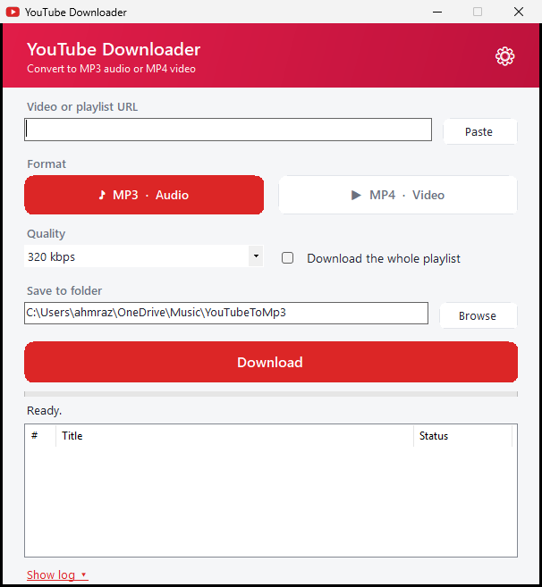

Download any YouTube video — or a whole playlist — as high-quality MP3 audio or MP4 video. No ads, no sign-up, no install. Just one file.
⬇️ Download for Windows Free · ~88 MB · one filePaste a link, pick MP3 or MP4, click Download. Your file lands in your Music folder. It really is that quick.

Everything you need to download YouTube videos and music, nothing you don't.
Save audio as MP3 (up to 320 kbps) or full video as MP4 (up to 1080p). Your choice, every time.
Paste a playlist and grab every video at once, with a live list showing what's done.
Multi-connection downloading pulls each file in several pieces at once for top speed.
No accounts, no pop-ups, no limits. Open it and download.
Everything is built into one .exe. Copy it to any Windows PC — nothing to install.
A clean app with dark mode and preferences it remembers for you.
Three steps, about 30 seconds.
Yes — completely free and open source, with no ads and no sign-up.
Yes. Paste a playlist link and it lists every video and downloads them, showing which are finished. You can download one at a time or several in parallel.
Yes. Choose MP3 for audio (music, podcasts) or MP4 for video, with selectable quality up to 1080p. MP4 uses H.264 + AAC so it plays on any device.
No. It's a single Windows .exe file — download it and open it. Everything it needs is built in.
Yes. It's open source — all the code is public on GitHub. Windows may show a SmartScreen notice for any small app; click “More info → Run anyway”.